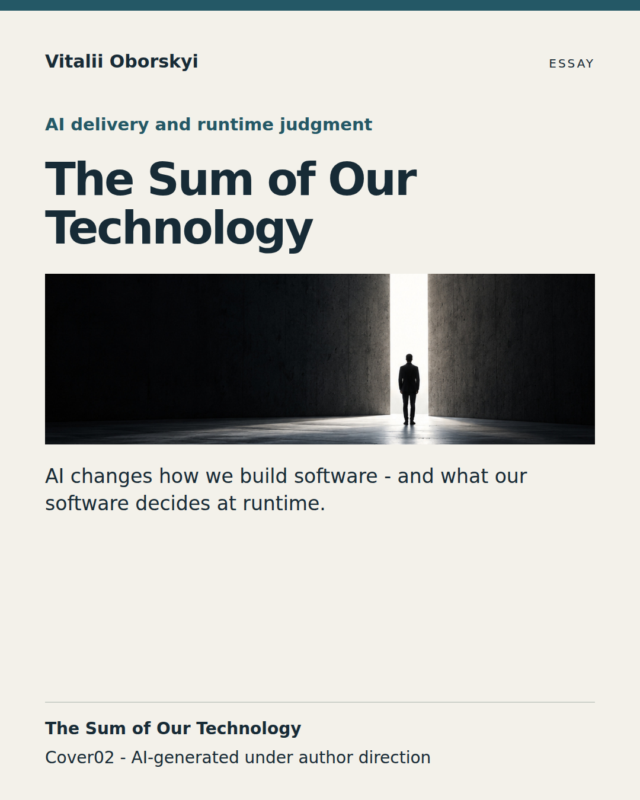
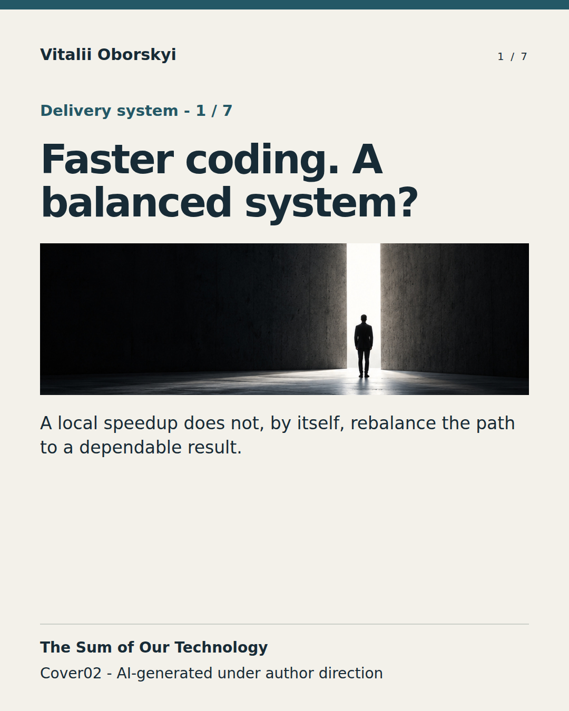
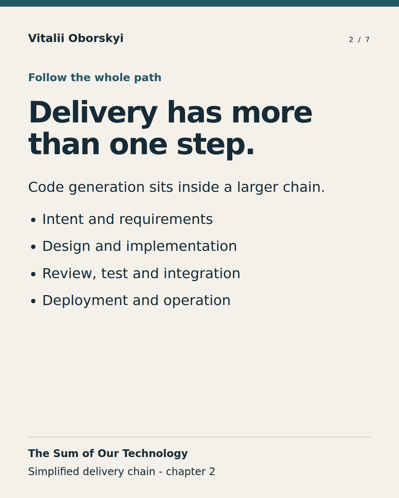
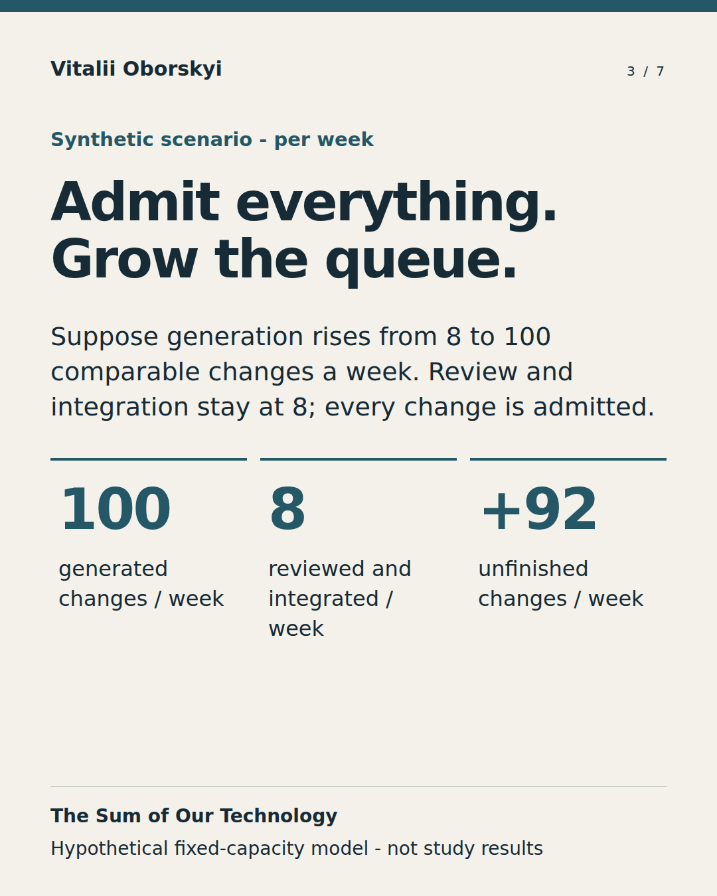
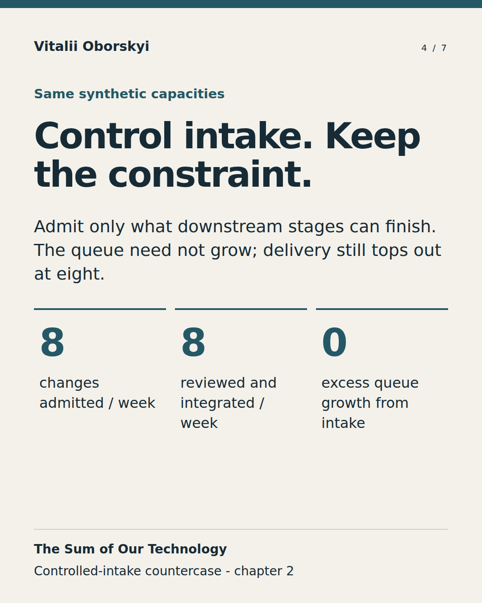
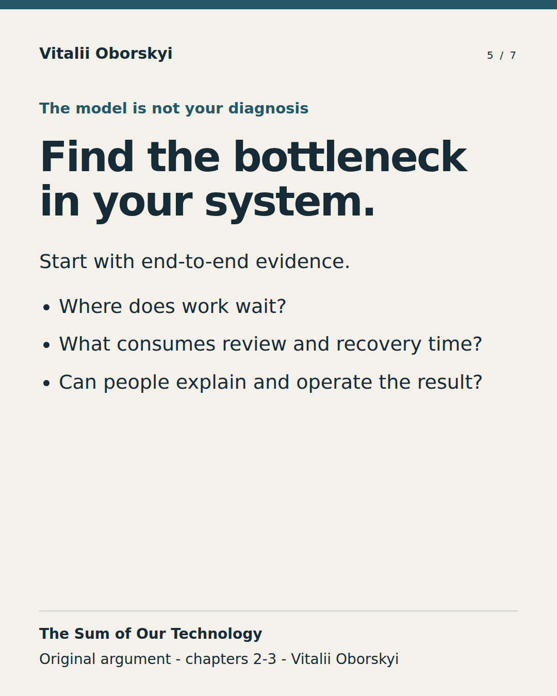
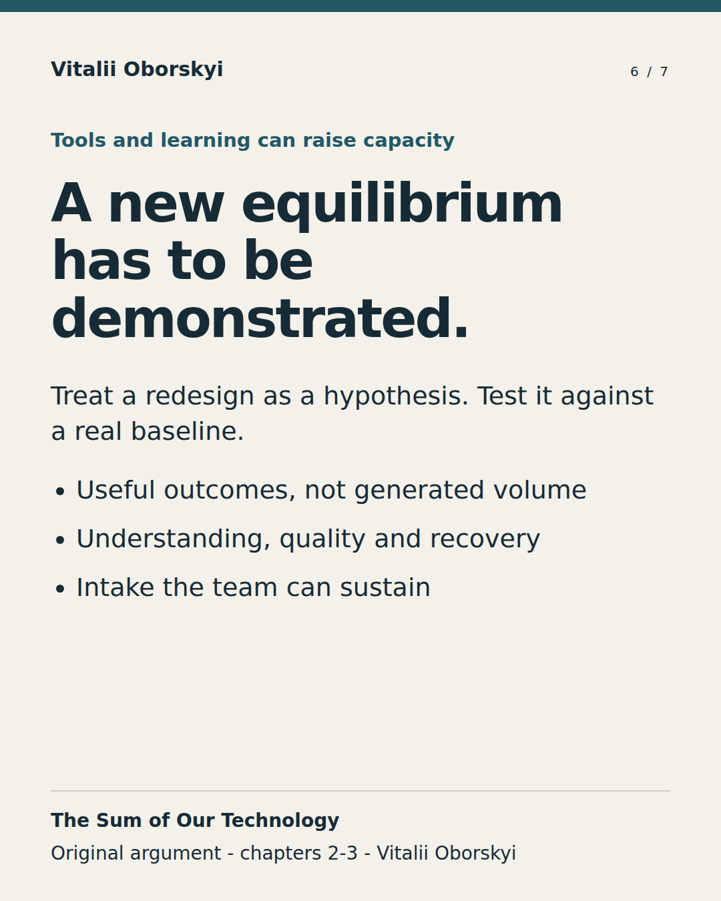
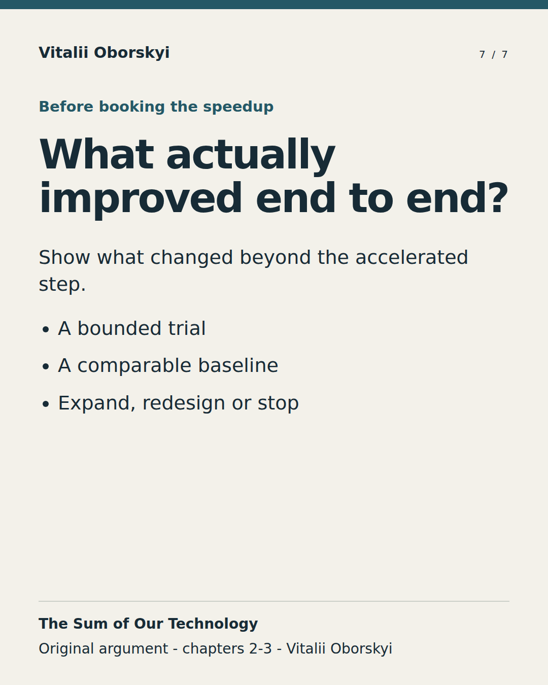

Draft preparation kit. Author, editorial, visual and rights acceptance remain separate. Nothing has been posted or scheduled.
Source manifest · Review checklist · Source credits
Canonical article URL and D0 are pending until verified publication. These source-bound drafts do not grant channel, editorial or rights approval.
D+0; relative to actual site publication.

We can delegate more work. We still have to own the consequences. AI changes software engineering in two connected ways: it changes how we build software, and it lets the products we build exercise judgment at runtime. The first can move work and risk into review, integration, maintenance and recovery. The second makes authority, evidence, fallback and real human capacity part of the product's operating design. Neither shift comes with a finished recipe. Promising gains deserve serious attention - and a baseline that tells us whether they hold in our own system. The Sum of Our Technology develops that argument from my UA Online PMDay 2026 Autumn talk: what must remain dependable around the capabilities we delegate? Read the full essay for the evidence, examples and limits.
D+4; relative to actual site publication.







A team generates, reviews and integrates eight comparable changes a week. Now suppose generation capacity rises to one hundred. Review and integration stay at eight. Admit every change: delivery stays at eight, while unfinished work grows by ninety-two a week. Control intake: the queue need not grow, but the downstream stages still cap delivery. This is a synthetic fixed-capacity illustration, not a measured AI outcome or a diagnosis of every team's bottleneck. The useful question is what changed across the whole delivery system - including understanding, quality, recovery and useful outcomes. Seven frames from the argument in The Sum of Our Technology.